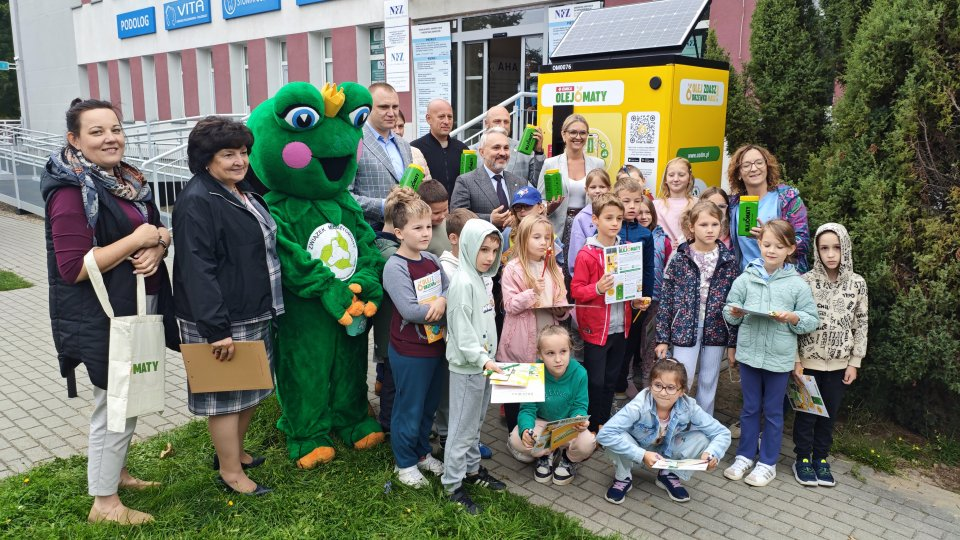

Płynny problem o wadze 42 milionów ton
Kiedy wylewasz gorący tłuszcz z patelni prosto do odpływu, wydaje się, że problem magicznie znika. Nic bardziej mylnego. Tłuszcz w kontakcie z zimną wodą w rurach zastyga, tworząc twarde jak beton zatory, które prowadzą do bardzo kosztownych awarii domowej kanalizacji i miejskich oczyszczalni. Skala zjawiska jest gigantyczna — szacuje się, że na świecie powstaje rocznie aż 42 miliony ton zużytego oleju posmażalniczego, z czego znaczną część pozbywa się w niewłaściwy sposób.
Kiedy taki olej trafia w końcu do środowiska naturalnego, zanieczyszcza glebę i wodę. Tworzy na powierzchni rzek barierę, która odcina tlen, doprowadzając do powolnego duszenia się organizmów wodnych. Niestety, wciąż wiele osób popełnia też inny błąd – wylewa olej do brązowego pojemnika na bioodpady, do którego kategorycznie nie należy wrzucać tłuszczów jadalnych.
Od patelni do baku, czyli magia zielonej rafinerii
Rozwiązaniem tego problemu są właśnie olejomaty. To innowacyjny, ogólnopolski system zbiórki zużytego oleju spożywczego (zwanego w skrócie UCO – Used Cooking Oil). Ale co właściwie dzieje się z tym starym, mętnym tłuszczem po wrzuceniu go do maszyny?
Wyobraź sobie ten proces jako „chemiczną pralkę”. Brudny olej to zamknięta skrzynia pełna uwięzionej energii, do której po smażeniu przyczepił się brud. W nowoczesnych rafineriach, w procesie m.in. transestryfikacji, olej bierze chemiczną kąpiel. Ciężkie i brudne związki (jak gliceryna) są odwirowywane i oddzielane, a z reszty powstaje czyste, pełnowartościowe paliwo silnikowe, czyli biodiesel. Dzięki temu nie musimy wydobywać z ziemi nowej ropy naftowej, a do tego drastycznie ograniczamy emisję gazów cieplarnianych. To idealny przykład gospodarki o obiegu zamkniętym w praktyce – dzisiejszy odpad staje się jutrzejszym zasobem.
💡 CZY WIESZ, ŻE...?
Wróg kompostu!
Nawet jeśli zależy Ci na ekologii, pamiętaj o żelaznej zasadzie: zużytego oleju jadalnego absolutnie nie wolno wyrzucać do brązowego pojemnika na odpady biodegradowalne (Bioodpady)! Tłuszcz zakłóca tam naturalne procesy rozkładu, przyciąga szkodniki i niszczy jakość cennego kompostu. Miejsce oleju jest wyłącznie w szczelnie zakręconej butelce.
Zostań domowym eko-detektywem. Co możesz zrobić już dziś?
Przejście na jasną stronę ekologii nie wymaga wielkiego wysiłku. Wystarczy drobna zmiana nawyku, by chronić rury w swoim mieszkaniu, ratować klimat i... odbierać nagrody. Oto Twoja codzienna instrukcja obsługi:
- Nigdy nie wylewaj do zlewu: Zapomnij o traktowaniu odpływu czy toalety jak kosza na śmieci. Twoje rury (i portfel) Ci za to podziękują.
- Pobierz aplikację i butelkę: Z darmowej aplikacji „Olejomaty” dowiesz się, gdzie stoi najbliższa maszyna. Olejomat wyda Ci specjalną, bezpieczną butelkę, odporną na temperaturę do 70°C.
- Wystudź i przelej: Po usmażeniu posiłku odczekaj chwilę, a następnie przelej olej do butelki. Nie przejmuj się resztkami jedzenia – w oleju mogą pływać resztki frytek czy panierki!
- Oddaj olej i odbierz drzewko: Zanieś pełną butelkę do maszyny. System automatycznie zważy pojemnik i przyzna Ci punkty w aplikacji. W ramach akcji „Olej zdasz, drzewko masz!” za jedną zdaną butelkę otrzymasz 100 punktów, a już za 300 punktów możesz odebrać sadzonki drzew lub inne zielone nagrody!
- Nie masz olejomatu? Idź do PSZOK: Jeśli w Twojej okolicy nie ma jeszcze takiej maszyny, pamiętaj, że zużyty olej (najlepiej w zwykłej plastikowej butelce) przyjmie od Ciebie za darmo każdy Punkt Selektywnego Zbierania Odpadów Komunalnych (PSZOK).

Twój ruch ma znaczenie!
Czas przestać traktować resztki z naszych kuchni jako bezwartościowe śmieci. Prawdziwa rewolucja ekologiczna nie dzieje się tylko na globalnych szczytach klimatycznych, ale na naszych kuchennych blatach. Dołączenie do ogólnopolskiej zbiórki oleju to czystsze rzeki, brak zatorów w kanalizacji i realne wsparcie dla planety. Przestań wylewać swoje zasoby do zlewu – weź butelkę, zacznij zbierać „płynne złoto” po dzisiejszym obiedzie i wymień je na żywe drzewo w swojej okolicy!